Sample Bay Cover and Pipettor Interference Check
Purpose
This procedure provides instructions to confirm that the Sample Bay Cover does not interfere with the movement of the Sample Pipettor.
What is Affected
All Sample Bay Covers may be affected.
After many cycles of cleaning the Sample Bay Cover may warp.
This warping can interfere with the movement of the Sample Pipettor.
If warping is verified the Sample Bay Cover MUST be replaced.
 The following images show the effect of severe warping of the Sample Bay Cover:
The following images show the effect of severe warping of the Sample Bay Cover:
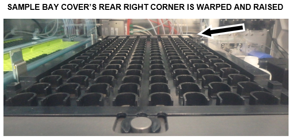
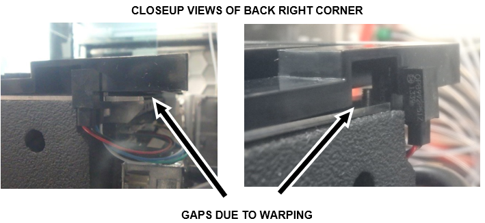
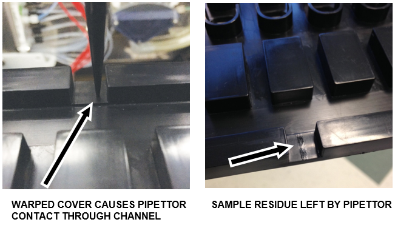
Parts and Materials Required
- Proper PPE
- DI Water
- Panther Tool Kit
- Sample Bay Cover
- 70% Ethanol
- 2.5% - 3.5% Sodium Hypochlorite (Bleach) solution
Time Required
- 30 Minutes
Procedure
- Put on proper PPE.
- Check that the Sample Bay Cover is installed correctly.
- Load one full set of tips into Tip Tray 1/1.
- Log in to the Service Software.
- Select the Pipettor tab.
- Click on the Main tab.
- Select Complete System from the drop down menu.
 Click Initialize.
Click Initialize.
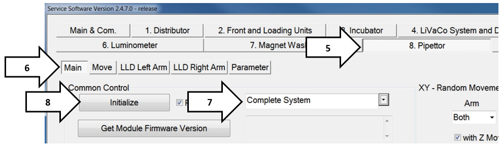
- Pick up a tip from the Tip Trays.
- Select Move.
- Select Tip Tray 1/1.
- Double-click a square in the Select Coordinate grid that has a tip. (The Pipettor will move into position above the selected tip.)
- Click Pick to pick up the tip.
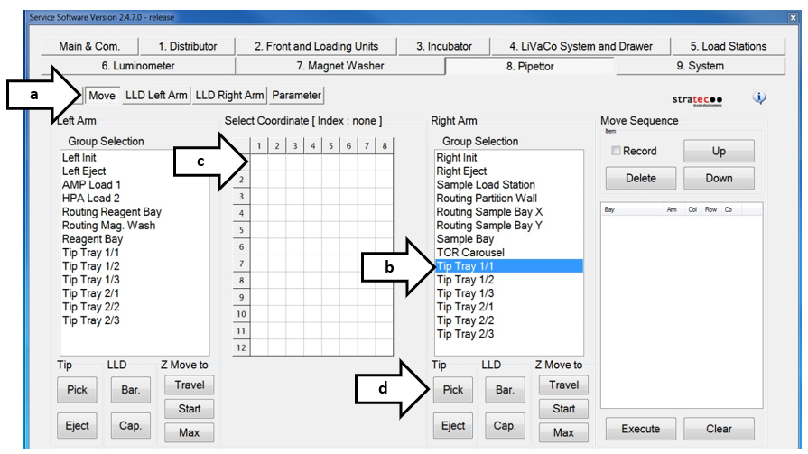
- Open the Service Software Trace View window.

Note—The Trace View window opens when the Service Software is started, and may be behind the Main Service Software window. - Type "FD 84 00 00 00 4F 00" in script field.
- Click Send.
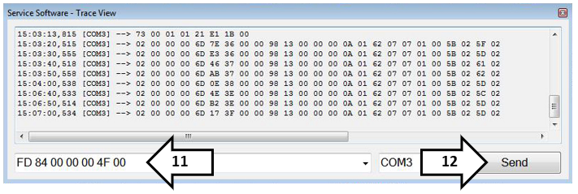
- Navigate back to the Pipettor tab.
- Click on the Max button in the Right Arm Group Selection.
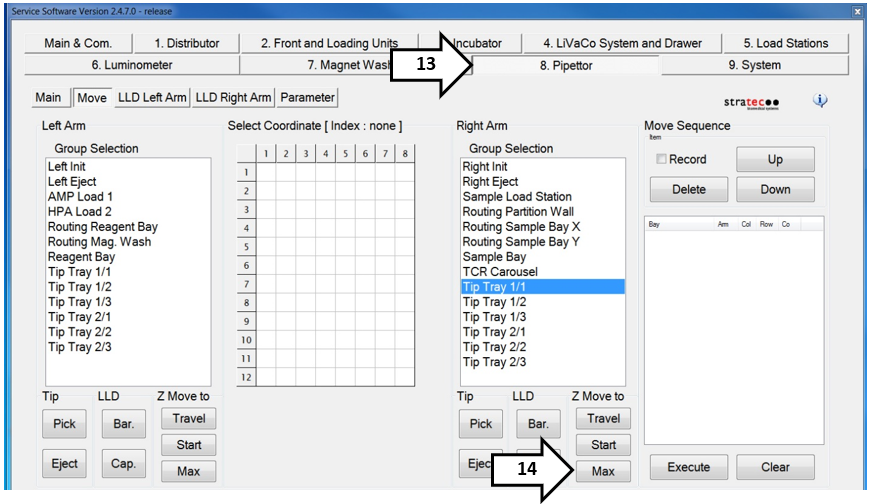
- Verify there is a visible clearance of 1 mm or greater between the pipettor tip and the surface of the cover.
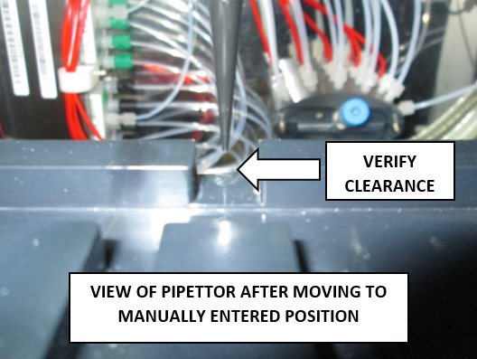
Note—The pipettor tip MUST NOT contact the cover when it travels through this channel. 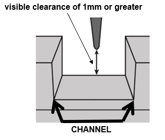
- Click Start to raise the pipettor.
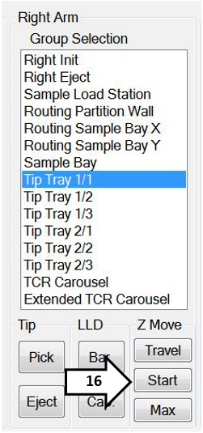
- Select Routing Sample Bay X.
- Double-click position (1,1) to move the pipettor.
- Click Max. (Pipettor always rises before travel.)
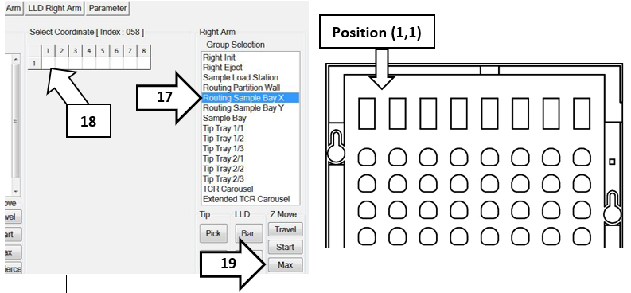
- Verify there is a visible clearance of 1 mm or greater between the pipettor tip and the surface of the cover.
- Double-click position (1,4) to move the pipettor.
- Click Max. (Pipettor always rises before travel.)
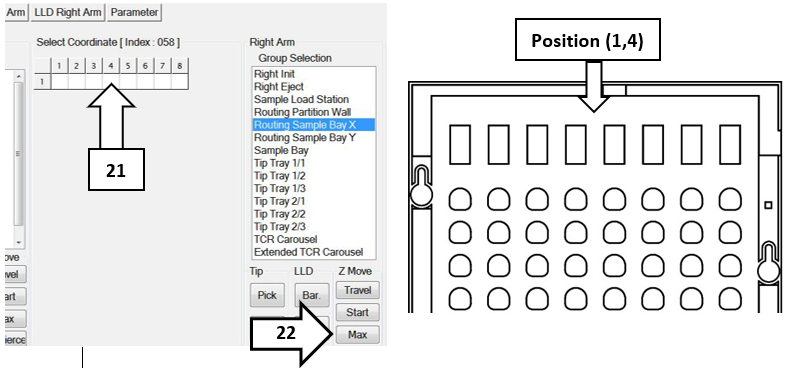
- Verify there is a visible clearance of 1 mm or greater between the pipettor tip and the surface of the cover.
- Double-click position (1,5) to move the pipettor.
- Click Max. (Pipettor always rises before travel.)
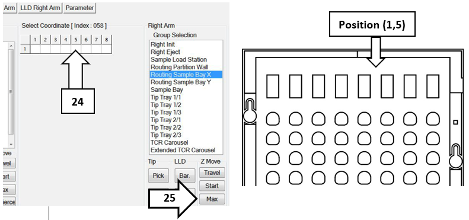
- Verify there is a visible clearance of 1 mm or greater between the pipettor tip and the surface of the cover.
- Double-click position (1,8) to move the pipettor.
- Click Max. (Pipettor always rises before travel.)
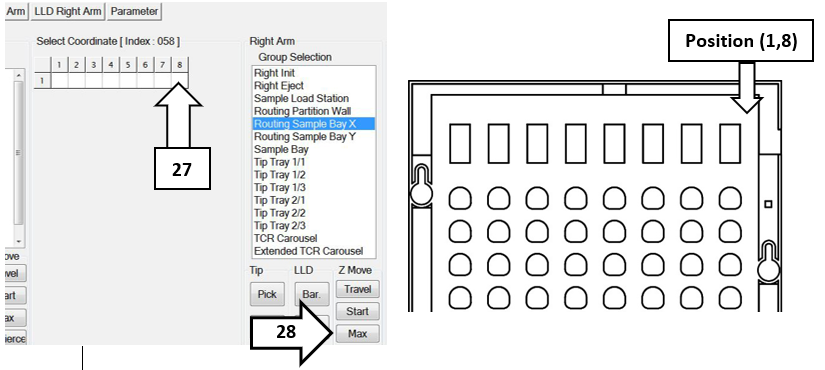
- Verify there is visible clearance between the pipettor tip and the surface of the cover.
Note—All Pipettor positions MUST have a visible clearance of 1 mm or greater, between the Tip and the Surface of the cover. - Discard all Sample Bay Covers that do not meet this criteria and repeat this procedure on every Sample Bay Cover (ALL Spares) that are available on site.
- Press Eject to eject a tip from the pipettor.
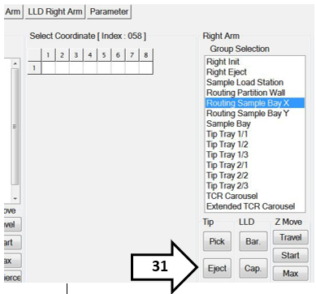
- The Sample Bay Cover and Pipettor Interference Check is complete.
 button at the top of the page to send feedback, comments, or change requests.
button at the top of the page to send feedback, comments, or change requests.